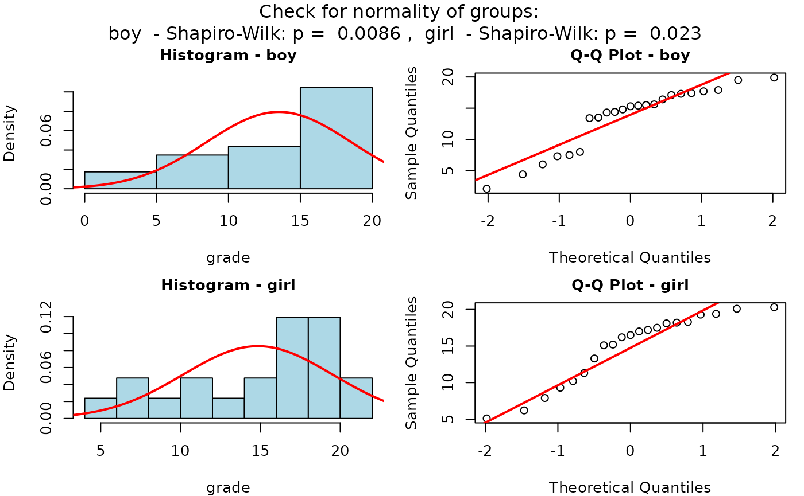
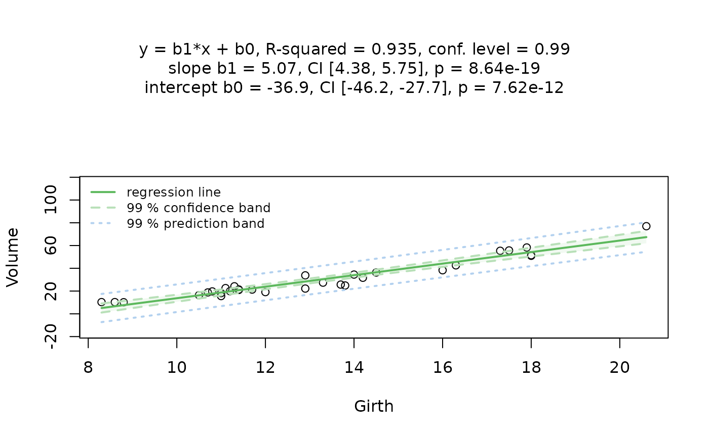
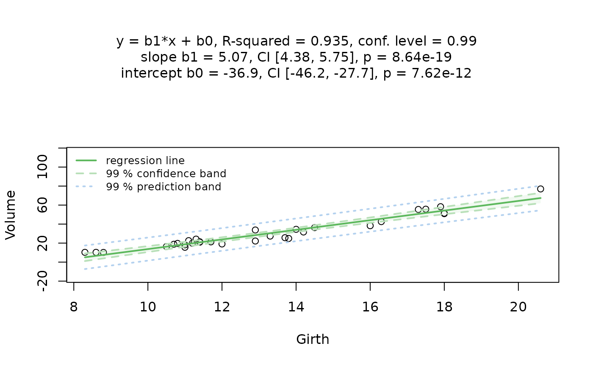
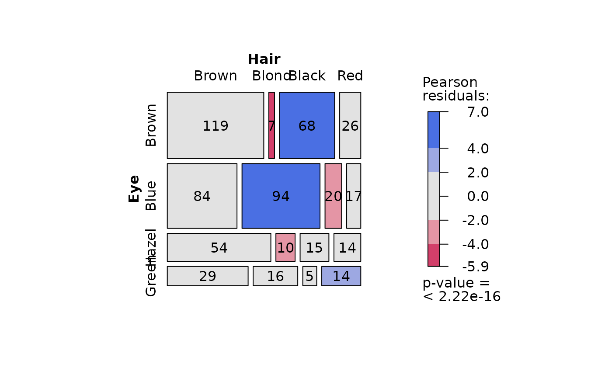
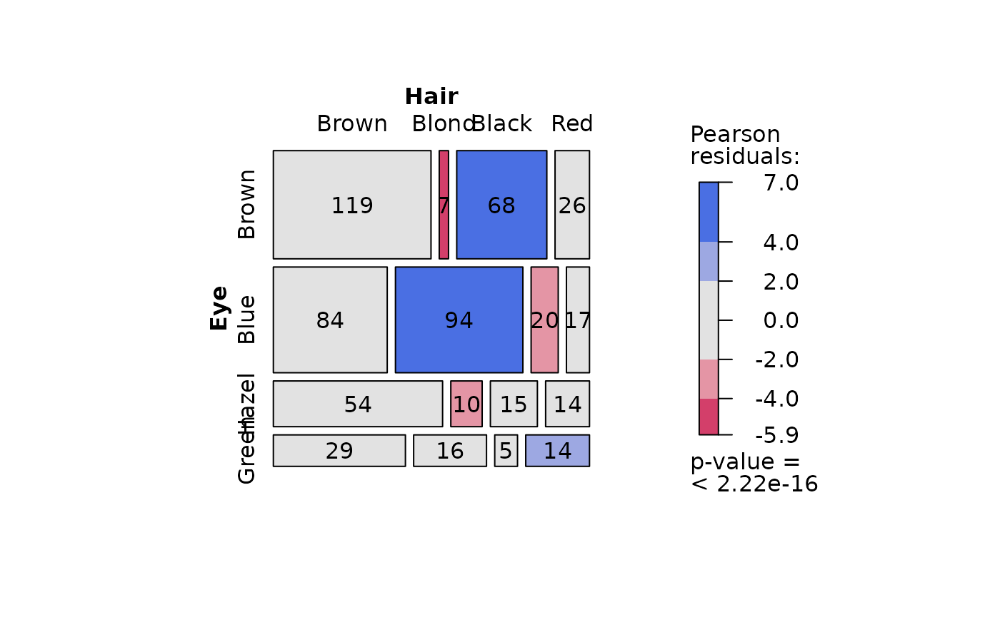
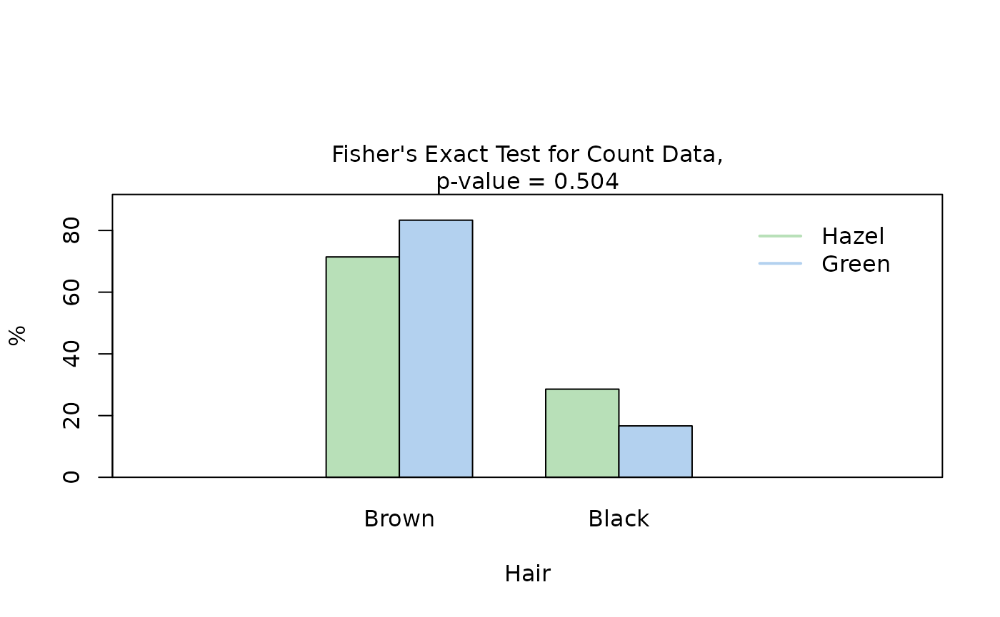
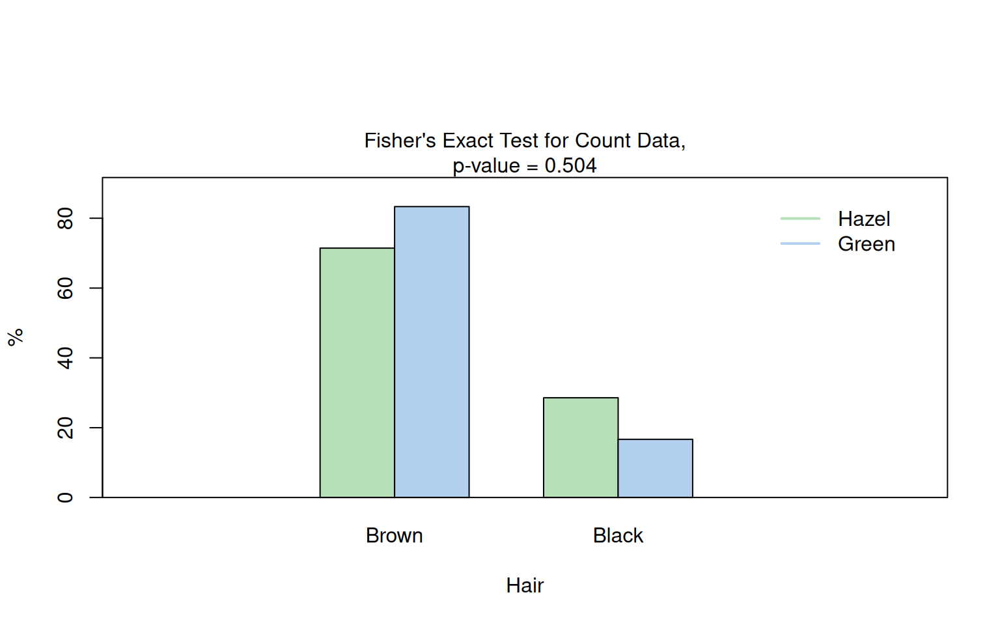
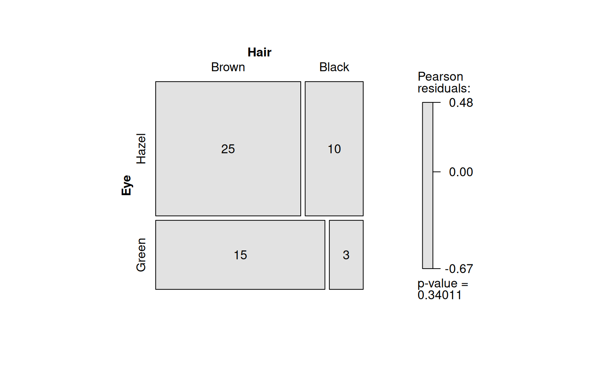

Introduction
visStatistics automatically selects and visualises
appropriate statistical hypothesis tests between a response and a
feature variable in a data frame. The choice of test depends on the
class, distribution, and sample size of the input
variables, as well as the user-defined ‘conf.level’. The main function
visstat() visualises the selected test with appropriate
graphs (box plots, bar charts, regression lines with confidence bands,
mosaic plots, residual plots, Q-Q plots), annotated with the main test
results, including any assumption checks and post-hoc analyses. A
minimal function call looks like:
visstat(dataframe, varsample = "response", varfactor = "feature")
The input data.frame must be column-based, and the
response varsample and feature varfactor must
be character strings naming columns of the data.frame.
This scripted workflow is particularly suited for browser-based interfaces that rely on server-side R applications connected to secure databases, where users have no direct access, or for quick data visualisations, e.g., in statistical consulting projects.
This scripted workflow is particularly well suited for interactive interfaces where users access data only through a graphical front end backed by server-side R sessions, as well as for quick data exploration e.g. in statistical consulting contexts.
The remainder of this vignette is organised as follows:
Section 2 summarises the decision logic of choosing a statistical test, whilst
Sections 3 - 5 give background on the implemented tests and visualises the decision logic using examples,
Section 6 gives an overview of the implemented tests.
Decision logic
Throughout the remainder, data of class "numeric" or
"integer" are referred as numerical, while data of class
"factor" are referred to as categorical. The significance
level
,
used throughout for hypothesis testing, is defined as
1 - conf.level, where conf.level is a
user-controllable argument (defaulting to 0.95).
The choice of statistical tests performed by the function
visstat() depends on whether the data are numerical or
categorical, the number of levels in the categorical variable, the
distribution of the data, as well as the user-defined ‘conf.level’.
The function prioritizes interpretable visual output and tests that remain valid under the following decision logic:
Numerical response and categorical predictor
When the response is numerical and the predictor is categorical, a statistical hypothesis test of central tendencies is selected.
If the categorical predictor has exactly two levels, Welch’s t-test (
t.test()) is applied whenever both groups contain more than 30 observations, with the validity of the test supported by the approximate normality of the sampling distribution of the mean under the central limit theorem Lumley et al. (2002). For smaller samples, group - wise normality is assessed using the Shapiro - Wilk test (shapiro.test()) at the significance level . If both groups are found to be approximately normally distributed according to the Shapiro–Wilk test, Welch’s t-test is applied; otherwise, the Wilcoxon rank-sum test (wilcox.test()) is used.For predictors with more than two levels, a model of Fisher’s one-way analysis of variables (ANOVA) (
aov()) is initially fitted. The normality of residuals is evaluated using both the Shapiro–Wilk test (shapiro.test()) and the Anderson-Darling test (ad.test()); residuals are considered approximately normal if at least one of the two tests yields a result exceeding the significance threshold . If this condition is met, Bartlett’s test (bartlett.test()) assesses homoscedasticity. When variances are homogeneous (), Fisher’s one-way ANOVA (aov()) is applied with Tukey’s Honestly Significant Differences (HSD) (TukeyHSD()) for post-hoc comparison. If variances differ significantly (), Welch’s heteroscedastic one-way ANOVA (oneway.test()) is used, also followed by Tukey’s HSD. If residuals are not normally distributed according to both tests (), the Kruskal–Wallis test (kruskal.test()) is selected, followed by pairwise Wilcoxon tests (pairwise.wilcox.test()). A graphical overview of the decision logic used is provided in the figure below.

Decision tree used to select the appropriate statistical test for a categorical predictor and numerical response, based on the number of factor levels, normality, and homoscedasticity.
Numerical response and numerical feature
When both the response and predictor are numeric, a simple linear
regression model (lm()) is fitted and analysed in detail,
including residual diagnostics, formal tests, and the plotting of fitted
values with confidence bands. Note that only one
predictor variable is allowed, as the function is designed for
two-dimensional visualisation.
Categorical response and categorical feature
In the case of two categorical variables, visstat()
tests the null hypothesis that the predictor and response variables are
independent using either Pearson’s
-test
(chisq.test()) or Fisher’s exact test
(fisher.test()). The choice of test is based on Cochran’s
rule (Cochran 1954), which advises that
the
approximation
is reliable only if no expected cell count is less than 1 and no more
than 20 percent of cells have expected counts below 5.
Limitations
The main purpose of this package is a decision-logic based automatic
visualisation of statistical test results. Therefore, except for the
user-adjustable conf.level parameter, all statistical tests
are applied using their default settings from the corresponding base R
functions. As a consequence, paired tests are currently not supported
and visstat() does not allow to study interactions terms
between the different levels of an independent variable in an analysis
of variance. Focusing on the graphical representation of tests, only
simple linear regression is implemented, as multiple linear regressions
cannot be visualised.
Numerical response and categorical feature
If the feature consists of class “factor”
with two or more levels and the response is of class
“numeric” or “integer” (both having mode
“numerical”), statistical tests are applied to compare the
central tendencies across groups. This section describes the conditions
under which parametric and non-parametric tests are chosen, based on the
response type, the number of factor levels, and the underlying
distributional assumptions.
Categorical feature with two levels: Welch’s t-test and Wilcoxon rank-sum test
When the feature variable has exactly two levels, Welch’s t-test or the Wilcoxon rank-sum test is applied.
Welch’s t-test (t.test())
Welch’s t-test (t.test()) assumes that the observations
are independent and that the response variable is approximately normally
distributed within each group. In contrast to Student’s t-test, it does
not require the assumption of equal variances (homoscedasticity) between
groups. Welch’s t-test remains valid and exhibits only minimal loss of
efficiency even when the assumptions of Student’s t-test – namely,
normality and equal variances of the response variable across groups –
are satisfied (Moser and Stevens 1992; Delacre,
Lakens, and Leys 2017). Therefore, Student’s t-test is not
implemented.
Welch’s t-test evaluates the null hypothesis that the means of two groups are equal without assuming equal variances. The test statistic is given by (Welch 1947; Satterthwaite 1946)
where and are the sample means, and the sample variances, and , the sample sizes in the two groups. The statistic follows a t-distribution with degrees of freedom approximated by the Welch-Satterthwaite equation:
The resulting p-value is computed from the t-distribution with degrees of freedom.
Wilcoxon rank-sum test (wilcox.test())
The two-sample Wilcoxon rank-sum test (also known as the Mann-Whitney test) is a non-parametric alternative that does not require the response variable to be approximately normally distributed within each group. It tests for a difference in location between two independent distributions (Wilcoxon 1945; Mann and Whitney 1947). If the two groups have distributions that are sufficiently similar in shape and scale, the Wilcoxon rank-sum test can be interpreted as testing whether the medians of the two populations are equal (Hollander, Chicken, and Wolfe 2014).
The two-level factor variable varfactor defines two
groups, with sample sizes
and
.
All
observations are pooled and assigned ranks from
to
.
Let
denote the sum of the ranks assigned to the group corresponding to the
first level of varfactor containing
observations. The test statistic returned by visstat() is
then computed as
If both groups contain fewer than 50 observations and the data contain no ties, the p-value is computed exactly. Otherwise, a normal approximation with continuity correction is used.
Graphical output
The graphical output consists of box plots overlaid with jittered
points to display individual observations. When Welch’s t-test is
applied, the function includes confidence intervals based on the
user-specified conf.level.
The title is structured as follows:
First line: Test name and chosen significance level .
Second line: Null hypotheses automatically adapted based on the user-specified
varsampleandvarfactor.Third line: Test statistic, p-value and automated comparison with
The function returns a list containing the results of the applied test and the summary statistics used to construct the plot.
Examples
Welch’s t-test
The Motor Trend Car Road Tests dataset (mtcars)
contains 32 observations, where mpg denotes miles per (US)
gallon, and am represents the transmission type
(0 = automatic, 1 = manual).

Increasing the confidence level conf.level from the
default 0.95 to 0.99 results in wider confidence intervals, as a higher
confidence level requires more conservative bounds to ensure that the
interval includes the true parameter value with greater certainty.
mtcars$am <- as.factor(mtcars$am)
t_test_statistics_99 <- visstat(mtcars, "mpg", "am", conf.level = 0.99)
Wilcoxon rank sum test
The Wilcoxon rank sum test is exemplified on differences between the central tendencies of grades of “boys” and “girls” in a class:
grades_gender <- data.frame(
sex = as.factor(c(rep("girl", 21), rep("boy", 23))),
grade = c(
19.3, 18.1, 15.2, 18.3, 7.9, 6.2, 19.4,
20.3, 9.3, 11.3, 18.2, 17.5, 10.2, 20.1, 13.3, 17.2, 15.1, 16.2, 17.0,
16.5, 5.1, 15.3, 17.1, 14.8, 15.4, 14.4, 7.5, 15.5, 6.0, 17.4,
7.3, 14.3, 13.5, 8.0, 19.5, 13.4, 17.9, 17.7, 16.4, 15.6, 17.3, 19.9, 4.4, 2.1
)
)
wilcoxon_statistics <- visstat(grades_gender, "grade", "sex")
Categorical feature with more than two levels
If the feature is of class “factor” with
more than two levels and the response is of
mode “numerical”, visstat()
either performs Fisher’s one-way ANOVA (Fisher
1971) (aov()), Welch’s heteroscedastic one-way ANOVA
(Welch 1951) (oneway.test())
or, as a non-parametric alternative, the Kruskal–Wallis test (Kruskal and Wallis 1952)
(kruskal.test()).
In the remainder of this section, we briefly introduce the tests themselves, the assumption checks, and the post-hoc procedures, and illustrate each test with an example.
Fisher’s one-way ANOVA (aov())
Fisher’s one-way ANOVA (aov()) tests the null hypothesis
that the means of multiple groups are equal. It assumes independent
observations, normally distributed residuals, and
homogeneous variances across groups. The test statistic
is the ratio of the variance explained by differences among group means
(between-group variance) to the unexplained variance within groups:
where is the mean of group , is the overall mean, is the observation in group , is the sample size in group , is the number of groups, and is the total number of observations.
Under the null hypothesis, this statistic follows an F-distribution with two parameters for degrees of freedom: the numerator () and the denominator (). The resulting p-value is computed from this distribution.
Welch’s heteroscedastic one-way ANOVA
(oneway.test())
When only the assumptions of independent observations and normally
distributed residuals are met, but homogeneous variances across
groups cannot be assumed , Welch’s heteroscedastic one-way
ANOVA (oneway.test()) (Welch
1951) provides an alternative to aov(). It compares
group means using weights based on sample sizes and variances. The
degrees of freedom are adjusted using a Satterthwaite-type approximation
(Satterthwaite 1946), resulting in an
F-statistic with non-integer degrees of freedom.
Kruskal–Wallis test (kruskal.test())
When the assumption of normality is not met, the Kruskal–Wallis test provides a non-parametric alternative. It compares group distributions based on ranked values and tests the null hypothesis that the groups come from the same population — specifically, that the distributions have the same location (Kruskal and Wallis 1952). If the group distributions are sufficiently similar in shape and scale, then the Kruskal–Wallis test can be interpreted as testing for equality of medians across groups (Hollander, Chicken, and Wolfe 2014).
The test statistic is defined as:
where is the sample size in group , is the number of groups, is the average rank of group , is the total sample size, and is the average of all ranks. Under the null hypothesis, approximately follows a distribution with degrees of freedom.
Testing the assumptions (visAnovaAssumptions())
The test logic for aov() and oneway.test()
follows from their respective assumptions. visstat()
initially models the data using aov() and analyses the
residuals.
If both of the following conditions are met: (1) the standardised
residuals follow a normal distribution, and (2) the residuals exhibit
homoscedasticity (equal variances across groups), then the test
statistic from aov() is returned.
If only the normality assumption is satisfied, visstat()
applies oneway.test(). If the normality assumption is
violated, kruskal.test() is used instead.
These assumptions are tested using the
visAnovaAssumptions() function.
Normality of residuals (shapiro.test() and
ad.test())
The visAnovaAssumptions() function assesses the
normality of standardised residuals from the ANOVA fit using both the
Shapiro–Wilk test (shapiro.test()) and the Anderson–Darling
test (ad.test()). Normality is assumed if at least one of
the two tests yields a p-value greater than
.
The function generates two diagnostic plots:
- a scatter plot of the standardised residuals against the fitted
means of the linear model for each level of the feature
(
varfactor), and - a Q–Q plot of the standardised residuals.
Equal variances across groups (bartlett.test())
Both aov() and oneway.test() assess whether
two or more samples drawn from normal distributions have the same mean.
While aov() assumes homogeneity of variances across groups,
oneway.test() does not require the variances to be
equal.
Homoscedasticity is assessed using Bartlett’s test
(bartlett.test()), which tests the null hypothesis that the
variances across all levels of the grouping variable are equal.
Controlling the family-wise error rate
After a significant test result, we would like to identify which specific groups differ significantly from each other. However, simple pairwise comparisons of group means or medians following an ANOVA or Kruskal–Wallis test increase the probability of incorrectly declaring a significant difference when, in fact, there is none.
This error is quantified by the family-wise error rate (pronounced “alpha per family of tests”), which refers to the probability of making at least one Type I error, that is, falsely rejecting the null hypothesis across all pairwise comparisons.
Given levels of the categorical variable, there are
pairwise comparisons possible, defining a family of tests (Abdi 2007).
Šidák correction
If (pronounced “alpha per test”) is the probability of making a Type I error in one comparison, then is the probability of not making a Type I error in one comparison.
If all comparisons are independent of each other, the probability of making no Type I error across the entire family of pairwise comparisons is . The family-wise error rate is then given by its complement (Abdi 2007):
Let us illustrate the inflation of the family-wise error rate with
increasing group number
(equal to the number of levels in the categorical
variable)) by the following examples: With
comparing
groups results in a family-wise error rate of
,
whereas comparing
groups (as in the examples below) already leads to the probability of at
least one time falsely rejecting the null hypothesis of
.
Solving the last equation defining for yields the Šidák equation (Šidák 1967):
This shows that, in order to achieve a given family-wise error rate, the corresponding per-test significance level must be reduced when there are more than two groups.
visstat() sets
to the user-defined
conf.level, resulting in
The Šidák approach becomes very conservative when the number of comparisons is large or when the tests are not independent.
Post-hoc-test following following an ANOVA: TukeyHSD()
The Šidák correction adjusts the significance level to control the
family-wise error rate for any set of independent comparisons, while
Tukey’s Honestly Significant Differences (TukeyHSD())
procedure applies this control specifically to all pairwise mean
comparisons after an ANOVA (either aov() or
oneway.test()), using a critical value derived from the
studentised range distribution.
Based on the user-specified confidence level
(conf.level), confidence intervals are constructed for all
pairwise differences between factor level means. A significant
difference between two means is indicated when the corresponding
confidence interval does not include zero. visstat()
returns both the HSD-adjusted p-values and the associated confidence
intervals for all pairwise comparisons.
Post-hoc-test following the Kruskal–Wallis rank
sum test: pairwise.wilcox.test()
As a post-hoc analysis following the Kruskal–Wallis test,
visstat() applies the pairwise Wilcoxon rank sum test using
pairwise.wilcox.test() with Holm’s method (Holm 1979) as the default adjustment for
multiple comparisons. Holm’s procedure is also much less stringent than
the Šidák method.
Graphical output
The graphical output for all tests based on a numerical response and a categorical feature with more than two levels consists of two panels: the first focuses on the residual analysis, and the second on the actual test chosen by the decision logic.
The residual panel addresses the assumption of normality, both graphically and through formal tests. It displays a scatter plot of the standardised residuals versus the fitted mean values, as well as a normal Q–Q plot comparing the sample quantiles to the theoretical quantiles. If the residuals are normally distributed, no more than approximately of the standardised residuals should exceed and in the Q–Q plot the data points should approximately follow the red straight line.
To assume normality of residuals, the formal tests for normality (Shapiro–Wilk and Anderson–Darling) should result in p-values greater than the user-defined .
To assume homogeneity of variances, Bartlett’s test (shown in the first line of the panel title) should also result in a p-value greater than .
visstat() then illustrates, in the subsequent graph,
either the kruskal.test(), the oneway.test(),
or aov() result (see Section “Decision logic”).
If neither normality of the residuals nor homogeneity of variances is
given, the kruskal.test() is executed. The result is
illustrated using box plots alongside jittered data points, with the
title displaying the p-value from kruskal.test().
Above each box plot, the number of observations per level is shown. Different green letters below a pair of box plots indicate that the two groups are considered significantly different, based on Holm’s-adjusted pairwise Wilcoxon rank sum test p-values smaller than .
If normality of the residuals can be assumed, a parametric test is
chosen: either aov(), if homoscedasticity is also assumed,
or oneway.test() otherwise. visstat() displays
the name of the test and the corresponding
-value
in the title.
The graph shows both the conf.level
confidence intervals and the wider Šidák-corrected
confidence intervals, alongside jittered data points for each group.
Different green letters below a pair of confidence intervals indicate
that the two groups are considered significantly different, based on the
results of the TukeyHSD() procedure.
The function returns a list containing the relevant test statistic along with the post-hoc-adjusted -values for all pairwise comparisons.
Examples
One-way test
The npk dataset reports the yield of peas (in pounds per
block) from an agricultural experiment conducted on six blocks. In this
experiment, the application of three different fertilisers – nitrogen
(N), phosphate (P), and potassium (K) – was varied systematically. Each
block received either none, one, two, or all three of the
fertilisers,
oneway_npk <- visstat(npk, "yield", "block")

Normality of residuals is supported by graphical diagnostics (scatter
plot of standardised residuals, Q-Q plot) and formal tests (Shapiro–Wilk
and Anderson-Darling, both with
).
However, homogeneity of variances is not supported at the given
confidence level
(,
bartlett.test()), so the p-value from the variance-robust
oneway.test() is reported. Post-hoc analysis with
TukeyHSD() shows no significant yield differences between
blocks, as all share the same group label (e.g., all green letters).
ANOVA example
The InsectSprays dataset reports insect counts from
agricultural experimental units treated with six different insecticides.
To stabilise the variance in counts, we apply a square root
transformation to the response variable.
insect_sprays_tr <- InsectSprays
insect_sprays_tr$count_sqrt <- sqrt(InsectSprays$count)
visstat(insect_sprays_tr, "count_sqrt", "spray")

After the transformation, the homogeneity of variances can be assumed
(
as calculated with the bartlett.test()), and the p-value of
the aov() is displayed.
Kruskal–Wallis rank sum test
The iris dataset contains petal width measurements (in
cm) for three different iris species.
visstat(iris, "Petal.Width", "Species") 

In this example, scatter plots of the standardised residuals and the Q-Q plot suggest that the residuals are not normally distributed. This is confirmed by very small p-values from both the Shapiro–Wilk and Anderson-Darling tests.
If both p-values are below the significance level
,
visstat() switches to the non-parametric
kruskal.test(). Post-hoc analysis using
pairwise.wilcox.test() shows significant differences in
petal width between all three species, as indicated by distinct group
labels (all green letters differ).
Numerical response and numerical feature
Simple linear regression (lm())
If both the feature varfactor and the response
varsample are numerical and contain only one level each,
visstat() performs a simple linear regression.
The resulting regression plot displays the point estimate of the regression line
where is the response variable, is the feature variable, is the intercept, and is the slope of the regression line.
Residual analysis
visstat() checks the normality of the standardised
residuals from lm() both graphically and using the
Shapiro–Wilk and Anderson-Darling tests. If the p-values for the null
hypothesis of normally distributed residuals from both tests are smaller
than
conf.int,
the title of the residual plot will display the message: “Requirement of
normally distributed residuals not met”.
Regardless of the result of the residual analysis,
visstat() proceeds to perform the regression. The title of
the graphical output indicates the chosen confidence level
(conf.level), the estimated regression parameters with
their confidence intervals and p-values, and the adjusted
.
The plot displays the raw data, the fitted regression line, and both the
confidence and prediction bands corresponding to the specified
conf.level.
visstat() returns a list containing the regression test
statistics, the p-values from the normality tests of the standardised
residuals, and the pointwise estimates of the confidence and prediction
bands.
Examples
dataset: cars
The cars dataset reports the speed of cars in miles per
hour (speed) and the stopping distance in feet
(dist).
linreg_cars <- visstat(cars, "dist", "speed")

Increasing the confidence level conf.level from the
default 0.95 to 0.99 results in wider confidence and prediction
bands:
linreg_cars <- visstat(cars, "dist", "speed", conf.level = 0.99)

p-values greater than conf.level in both the
Anderson-Darling normality test and the Shapiro–Wilk test of the
standardised residuals indicate that the normality assumption of the
residuals underlying the linear regression is met.
linreg_trees <- visstat(trees, "Volume", "Girth", conf.level = 0.9) 

dataset: trees
The trees dataset provides measurements of the diameter
(Girth, in inches), Height (in feet), and
Volume (in cubic feet) of black cherry trees. In this
example, we choose Volume as the response and
Girth as the feature.
linreg_cars <- visstat(trees, "Volume", "Girth", conf.level = 0.9)

Both the graphical analysis of the standardised residuals and
p-values greater than
in the Anderson-Darling and Shapiro–Wilk tests suggest that the
assumption of normally distributed residuals is met. Furthermore, the
linear regression model explains 93% of the total variance in the
response variable Volume.
Categorical response and categorical feature
When both varfactor and varsample are
categorical (i.e., of class factor), visstat()
tests the null hypothesis that the two variables are independent.
Observed frequencies are typically arranged in a contingency table,
where rows index the levels
of the response variable and columns index the levels
of the feature variable.
Pearson’s residuals and mosaic plots
Mosaic plots provide a graphical representation of contingency tables, where the area of each tile is proportional to the observed cell frequency. To aid interpretation, tiles are coloured based on Pearson residuals from a chi-squared test of independence. These residuals measure the standardised deviation of observed from expected counts under the null hypothesis of independence.
Let and denote the observed and expected frequencies in row and column of an contingency table. The Pearson residual for each cell is defined as
Positive residuals (shaded in blue) indicate observed counts greater than expected, while negative values suggest under-representation (shaded in red). Colour shading thus highlights which combinations of categorical levels contribute most to the overall association.
Pearson’s
-test
(chisq.test())
The test statistic of Pearson’s -test (Pearson 1900) is the sum of squared Pearson residuals:
The test statistic is compared to the chi-squared distribution with $ (R - 1)(C - 1)$ degrees of freedom. The resulting p-value corresponds to the upper tail probability — that is, the probability of observing a value greater than or equal to the test statistic under the null hypothesis.
Pearson’s test with Yates’ continuity correction
Yates’ correction is applied to the Pearson statistic in contingency tables (with one degree of freedom). In this case, the approximation of the discrete sampling distribution by the continuous distribution tends to overestimate the significance level of the test. To correct for this, Yates proposed subtracting 0.5 from each absolute difference between observed and expected counts (Yates 1934), resulting in a smaller test statistic:
This reduced test statistic yields a larger p-value, thereby lowering the risk of a Type I error.
Fisher’s exact test (fisher.test())
The
approximation is considered reliable only if no expected cell count is
less than 1 and no more than 20 percent of cells have expected counts
below 5 (Cochran 1954)). If this condition
is not met, Fisher’s exact test (Fisher
1971) (fisher.test()) is applied instead, as it is a
non-parametric method that does not rely on large-sample approximations.
The test calculates an exact p-value for testing independence by
conditioning on the observed margins: the row totals
and the column totals
,
defining the structure of the contingency table.
In the case, the observed table can be written as:
Let denote the above observed contingency table. The exact probability of observing this table under the null hypothesis of independence, given the fixed margins, is given by the hypergeometric probability mass function (PMF)
where is the total sample size.
The p-value is computed by summing the probabilities of all tables with the same margins whose probabilities under the null are less than or equal to that of the observed table.
For general
tables, fisher.test() generalises this approach using the
multivariate hypergeometric distribution.
Test choice and graphical output
If the expected frequencies are sufficiently large - specifically, if
at least 80% of the cells have expected counts greater than 5 and no
expected count is zero - the function uses Pearson’s
-test
(chisq.test()).
Otherwise, it switches to Fisher’s exact test
(fisher.test()) (Cochran
1954).
For 2-by-2 contingency tables, Yates’ continuity correction (Yates 1934) is always applied to Pearson’s -test.
For all tests of independence visstat() displays a
grouped column plot that includes the respective test’s p-value in the
title, as well as a mosaic plot showing colour-coded Pearson residuals
and the p-value of Pearson’s
-test.
Transforming a contingency table to a data frame
The following examples for tests of categorical feature and response
are all based on the HairEyeColor contingency table.
Contingency tables must be converted to the required column-based
data.frame using the helper function
counts_to_cases(). The function transforms the contingency
table HairEyeColor into data.frame named
HairEyeColourDataFrame.
HairEyeColourDataFrame <- counts_to_cases(as.data.frame(HairEyeColor))Examples
In all examples of this section, we will test the null hypothesis that hair colour (“Hair”) and eye colour (“Eye”) are independent of each other.
Pearson’s -test (``)
hair_eye_colour_df <- counts_to_cases(as.data.frame(HairEyeColor))
visstat(hair_eye_colour_df, "Hair", "Eye")
The graphical output shows that the null hypothesis of Pearson’s test – namely, that hair colour and eye colour are independent – must be rejected at the default significance level (). The mosaic plot indicates that the strongest deviations are due to over-representation of individuals with black hair and brown eyes, and of those with blond hair and blue eyes. In contrast, individuals with blond hair and brown eyes are the most under-represented.
Pearson’s -test with Yate’s continuity correction
In the following example, we restrict the data to participants with either black or brown hair and either brown or blue eyes, resulting in a 2-by-2 contingency table.
hair_black_brown_eyes_brown_blue <- HairEyeColor[1:2, 1:2, ]
# Transform to data frame
hair_black_brown_eyes_brown_blue_df <- counts_to_cases(as.data.frame(hair_black_brown_eyes_brown_blue))
# Chi-squared test
visstat(hair_black_brown_eyes_brown_blue_df, "Hair", "Eye")
Also in this reduced dataset we reject the null hypothesis of independence of the hair colors “brown” and “black” from the eye colours “brown” and ” blue”. The mosaic plot shows that blue eyed persons with black hair are under-represented. Note the higher p-value of Pearson’s -test with Yate’s continuity correction (p=0.00354) compared to the p-value of Pearson’s -test (p=0.00229) shown in the mosaic plot.
Fisher’s exact test (fisher.test())
Again, we extract a 2-by-2 contingency table from the full dataset, this time keeping only male participants with black or brown hair and hazel or green eyes.
Pearson’s test applied to this table would yield an expected frequency less than 5 in one of the four cells (25% of all cells), which violates the requirement that at least 80% of the expected frequencies must be 5 or greater (Cochran 1954).
Therefore, visstat() automatically selects Fisher’s
exact test instead.
hair_eye_colour_male <- HairEyeColor[, , 1]
# Slice out a 2 by 2 contingency table
black_brown_hazel_green_male <- hair_eye_colour_male[1:2, 3:4]
# Transform to data frame
black_brown_hazel_green_male <- counts_to_cases(as.data.frame(black_brown_hazel_green_male))
# Fisher test
fisher_stats <- visstat(black_brown_hazel_green_male, "Hair", "Eye")

Saving the graphical output
All generated graphics can be saved in any file format supported by
Cairo(), including “png”, “jpeg”, “pdf”, “svg”, “ps”, and
“tiff” in the user specified plotDirectory. In the
following example, we store the graphics in png format in
the plotDirectory tempdir(). The file names
reflect the statistical test used and the variable names involved.
#Graphical output written to plotDirectory: In this example
# a bar chart to visualise the Chi-squared test and mosaic plot showing
# Pearson's residuals.
#chi_squared_or_fisher_Hair_Eye.png and mosaic_complete_Hair_Eye.png
visstat(black_brown_hazel_green_male, "Hair", "Eye",
graphicsoutput = "png", plotDirectory = tempdir())Remove the graphical output from plotDirectory:
file.remove(file.path(tempdir(), "chi_squared_or_fisher_Hair_Eye.png"))
file.remove(file.path(tempdir(), "mosaic_complete_Hair_Eye.png"))Implemented tests
Numerical response and categorical feature
When the response is numerical and the feature is categorical, test of central tendencies are selected:
t.test(), wilcox.test(),
aov(),
oneway.test(),kruskal.test()
Normality assumption check
shapiro.test() and ad.test()
Post-hoc tests
-
TukeyHSD()(foraov()andoneway.test()) -
pairwise.wilcox.test()(forkruskal.test())
Numerical response and numerical feature
When both the response and feature are numerical, a simple linear regression model is fitted:
Categorical response and categorical feature
When both variables are categorical, visstat() tests the
null hypothesis of independence using one of the following:
-
chisq.test()(default for larger samples) -
fisher.test()(used for small expected cell counts based on Cochran’s rule)